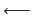

Attention Si le curseur est dans cette ligne de commandes, lorsqu'on clique dans une case, c'est le nom de cette case qui va s'afficher dans cette ligne, sans changer la case de sélection. Pour enlever le curseur tapez sur Echap ou Escape ou encore sur la touche d'effacement  jusqu'au début de ligne puis encore une fois.
Si le curseur n'est pas dans la ligne de commandes, lorsqu'on clique dans une case, c'est la formule de cette case qui va s'afficher dans cette ligne, en mettant son nom dans la case de sélection (pour avoir la valeur de cette case il faut appuyer sur le bouton val).
Autre exemple :
- Matrix <> R4C6 manual right cell
cela veut dire que l'on a une matrice qui n'a pas été modifiée depuis la
dernière sauvegarde (-), il ne lui correspond pas de nom de variable
(<>), elle a 4 lignes et 6 colonnes, elle n'est réévaluée que si on
appuie sur le bouton eval, le curseur se déplace vers la droite
lorsqu'on vient de remplir une cellule et une matrice remplit une seule
cellule.